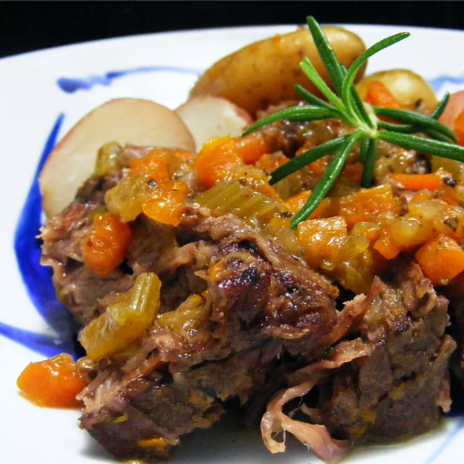

Simple Beef Pot Roast

Ingredients:
- 1 tablespoon vegetable oil
- 3 ½ pounds beef chuck pot roast
- 2 teaspoons salt
- 1 teaspoon ground black pepper
- 1 cup diced carrots
- 1 cup diced celery
- 1 cup diced onion
- ¼ cup butter
- 1 teaspoon dried rosemary
Instructions:
-
Preheat the oven to 275 degrees F (135 degrees C).
-
Heat vegetable oil in a large oven-safe pot over medium-high heat. Season chuck roast with salt and black pepper, then cook in hot oil until brown on both sides; transfer to a plate.
-
Add carrots, celery, and onion to the pot. Cook and stir until vegetables start to release their juices, scraping any brown flavor bits off the bottom of the pot, about 3 minutes. Add butter, and cook until onions are translucent, about 5 minutes. Sprinkle in rosemary; return roast to the pot and cover.
-
Roast in the preheated oven until the chuck roast is tender, about 2 1/2 to 3 hours. Season vegetables with additional salt and black pepper, if desired.